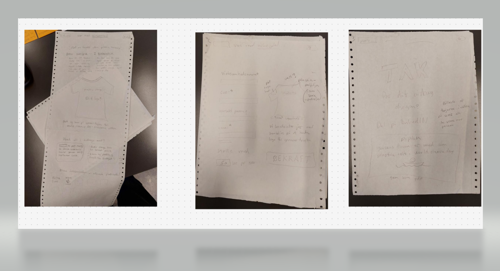
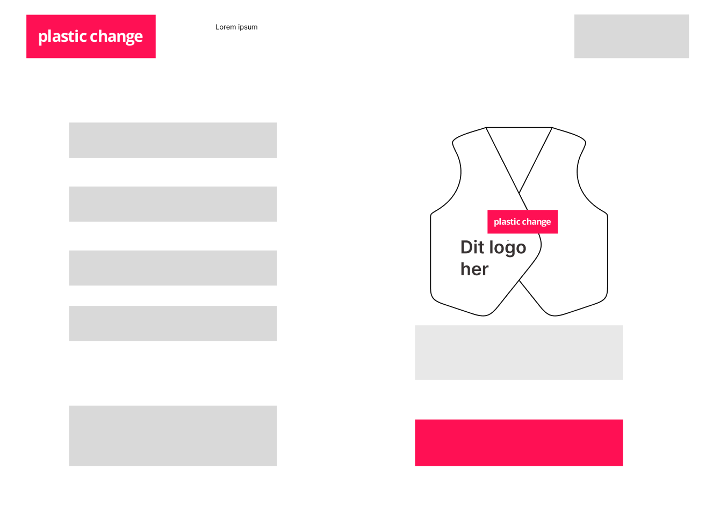
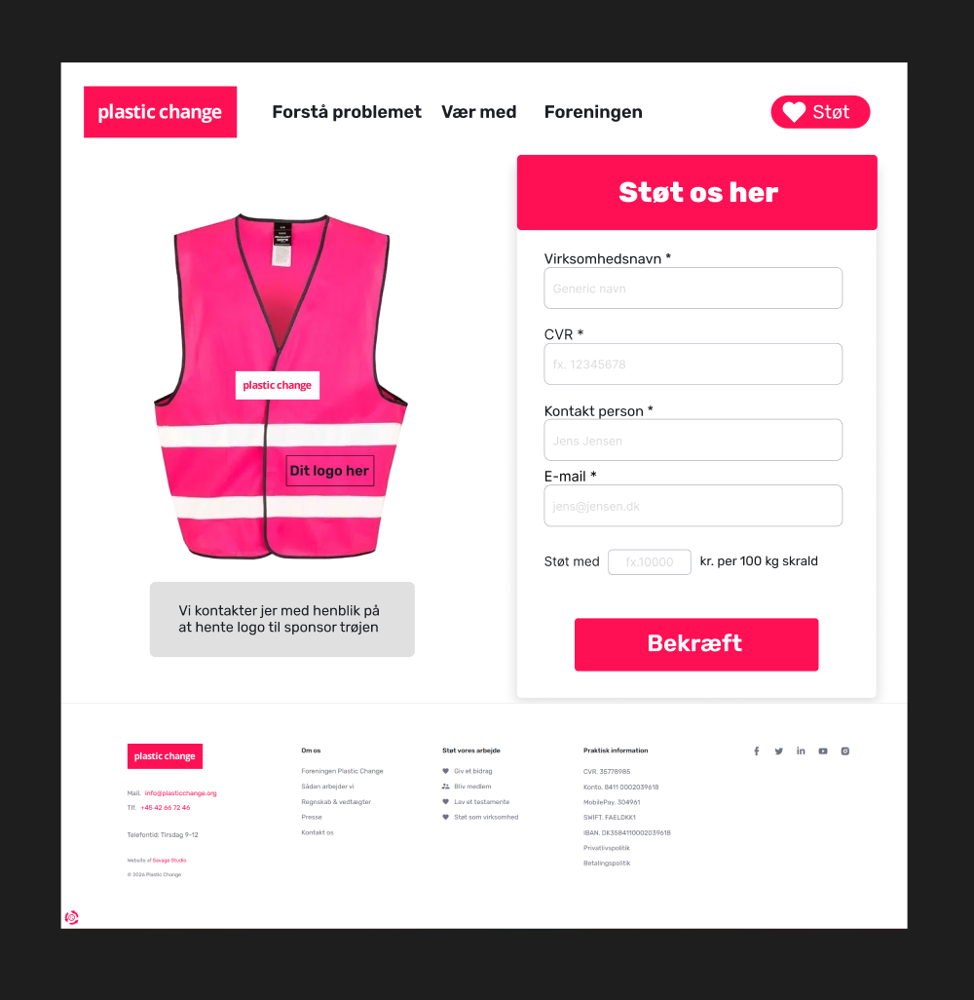

Sustainable UX design

Opgaven
Vi skulle bruge sustainable design til at hjelpe plastic change med at komme op med et koncept der kunne åge deres indkomst.
Processen
Vi startede med at skitsere idere til redesign af PC landing page og undersider for at gøre det nemmer at navigerer rundt i, derefter begynte vi på figma prototyper samtidig med at vi viderudviklet vores koncept.
Resultatet
Vi ente med to koncepter enten veste hvor der ville være sponser mærker sat på med velkro eller merkerne skulle sys på.

